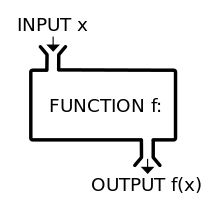

In mathematics, a function is an expression, rule, or law that defines a relationship between one variable (the independent variable) and another variable (the dependent variable).
In programming, a function is a block of code that performs a specific task.
Suppose we need to create a program to create a circle and color it. We can create two functions to solve this problem:
- a function to draw the circle
- a function to color the circle
Dividing a complex problem into smaller chunks makes our program easy to understand and reusable.
There are two types of function:
- Standard Library Functions: Predefined in C++
- User-defined Functions: Created by users
C++ User-defined Function
C++ allows the programmer to define their own function.
A user-defined function groups code to perform a specific task and that group of code is given a name (identifier).
When the function is invoked from any part of the program, it all executes the codes defined in the body of the function.
Why Using Functions?
New programmers often ask, “Can’t we just put all the code inside the main function?” For simple programs, you absolutely can. However, functions provide a number of benefits that make them extremely useful in programs of non-trivial length or complexity.
-
Organization
As programs grow in complexity, having all the code live inside the main() function becomes increasingly complicated. A function is almost like a mini-program that we can write separately from the main program, without having to think about the rest of the program while we write it. This allows us to reduce a complicated program into smaller, more manageable chunks, which reduces the overall complexity of our program.
-
Reusability
Once a function is written, it can be called multiple times from within the program. This avoids duplicated code (“Don’t Repeat Yourself”) and minimizes the probability of copy/paste errors. Functions can also be shared with other programs, reducing the amount of code that has to be written from scratch (and retested) each time.
-
Testing
Because functions reduce code redundancy, there’s less code to test in the first place. Also because functions are self-contained, once we’ve tested a function to ensure it works, we don’t need to test it again unless we change it. This reduces the amount of code we have to test at one time, making it much easier to find bugs (or avoid them in the first place).
-
Extensibility
When we need to extend our program to handle a case it didn’t handle before, functions allow us to make the change in one place and have that change take effect every time the function is called.
-
Abstraction
In order to use a function, you only need to know its name, inputs, outputs, and where it lives. You don’t need to know how it works, or what other code it’s dependent upon to use it. This lowers the amount of knowledge required to use other people’s code (including everything in the standard library).
When and How to Effectively Using Functions?
One of the biggest challenges new programmers encounter (besides learning the language) is understanding when and how to use functions effectively.
- Groups of statements that appear more than once in a program should generally be made into a function. For example, if we’re reading input from the user multiple times in the same way, that’s a great candidate for a function. If we output something in the same way in multiple places, that’s also a great candidate for a function.
- Code that has a well-defined set of inputs and outputs is a good candidate for a function, (particularly if it is complicated). For example, if we have a list of items that we want to sort, the code to do the sorting would make a great function, even if it’s only done once. The input is the unsorted list, and the output is the sorted list. Your current program might only use that in one place, but if you turn it into a function, it’s ready to be reused if you later extend your program or in a future program.
- A function should generally perform one (and only one) task.
- When a function becomes too long, too complicated, or hard to understand, it can be split into multiple sub-functions. This is called refactoring.
Function Declaration
The syntax to declare a function is:
returnType FunctionName (dataType param1, dataType param2, ...) {
// function body
}
For example:
void SayHello () {
std ::cout << "Hello World" ;
}
- the name of the function is
SayHello - the return type of the function is
void - the empty parentheses
()mean it doesn't have any parameters - the function body is written inside
{}
Note: We will learn about return type and parameters later in this tutorial.
Calling a Function
We have declared a function named SayHello(). To use the SayHello() function, we need to call it.
#include <iostream>
using namespace std ;
// declaring a function
void SayHello () {
std ::cout << "Hello World" ;
}
int main () {
// calling a function
SayHello ();
return 0 ;
}
Hello World
Function Parameters
A function can be declared with parameters (arguments). A parameter is a value that is passed when declaring a function.
void PrintNum (int num) {
cout << "The number is " << num;
}
Here, the int variable num is the function parameter.
We pass a value to the function parameter while calling the function.
int main () {
int n = 7 ;
// calling the function
// n is passed to the function as argument
PrintNum (n);
return 0 ;
}
The number is 7
#include <iostream>
using namespace std ;
void displayNum (int n1, float n2) {
cout << "The int number is " << n1;
cout << "The float number is " << n2;
}
int main () {
int num1 = 5 ;
float num2 = 5.5 ;
displayNum (num1, num2);
return 0 ;
}
The int number is 5
The float number is 5.5
In the above program, we have used a function that has one int parameter and one float parameter.
We then pass num1 and num2 as arguments. These values are stored by the function parameters n1 and n2 respectively.
Note: The type of the arguments passed while calling the function must match with the corresponding parameters defined in the function declaration.
Return Statement
In the above examples, we have used void in the function declaration. The means the function is not returning any value.
It is also possible to return a value from a function. For this, we need to specify the return type of the function during function declaration.
Then, the return statement can be used to return a value from a function. For example:
int add (int a, int b) {
int result = a + b;
return result;
}
Here, we have the data type int instead of void. This means that the function returns an int value.
In this example, the function return the sum of two parameters as the function value.
The return statement denotes that the function has ended. Any code after return inside the function is not executed.
#include <iostream>
using namespace std ;
int add (int n1, int n2) {
return (a + b);
}
int main () {
int sum = add (100 , 78 );
cout << "100 + 78 = " << sum << endl ;
return 0 ;
}
100 + 78 = 178
In the above example, the add() function is called with two int literals 100 and 78 as arguments.
The returned value of the function is stored in the variable sum, and being printed.
Notice that sum is a variable of int type. This is because the return value of add() is of int type.
Function Prototype
In C++, the code of function declaration should be done before the function call.
However, if we want to define a function after the function call, we need to use the function prototype. For example
// function prototype
int Addition (int , int );
int main () {
Addition (5 , 3 );
return 0 ;
}
// function definition
int Addition (int a, int b) {
cout << (a + b);
}
This provides the compiler with information about the function name and its parameters. That's why we can use the code to call a function before the function has been defined.
The syntax of a function prototype is
returnType FunctionName (dataType1, dataType2, ...)
Using the above example, we modified it to use function prototype
// function prototype is declared before main()
// function definition is defined after main()
#include <iostream>
using namespace std ;
void add (int , int );
int main () {
int sum = add (100 , 78 );
cout << "100 + 78 = " << sum << endl ;
return 0 ;
}
void add (int n1, float n2) {
return (a + b);
}
100 + 78 = 178
Benefits of Using User-Defined Functions
- Functions make the code reusable. We can declare them once and use them multiple times.
- Functions make the program easier as each small task is divided into a function.
- Functions increase readability.
Function Styling
Function styling is not syntactically required in order to have a legal function. However proper styling is still important in order to improve readability.
Typically, common function naming style in C++ community is CamelCase or camelCase. Either sytle is fine as long as it is consistent throughout the whole program.
Different field or different project team may come up with their own defined style to follow. However if not specifically mentioned, usually Google C++ Style Guide is the most common style to follow.
C++ Library Functions
There are many built-in functions in C++ that programmers can use them by invoking the functions directly; and they don't need to write the functions themselves. Some common functions are sqrt(), abs(), isdigit(), and many many more. Typically, these functions are optimized and very efficient. Hence, we are recommended to use them whenever possible instead of implementing ourselves.
These functions are defined in standard libraries, such as iostream, cmath, etc.
In order to use the standard library functions, we need to include the header file where these functions are defined.
To learn more, visit C++ Standard Library or C++ Standard Library Functions.